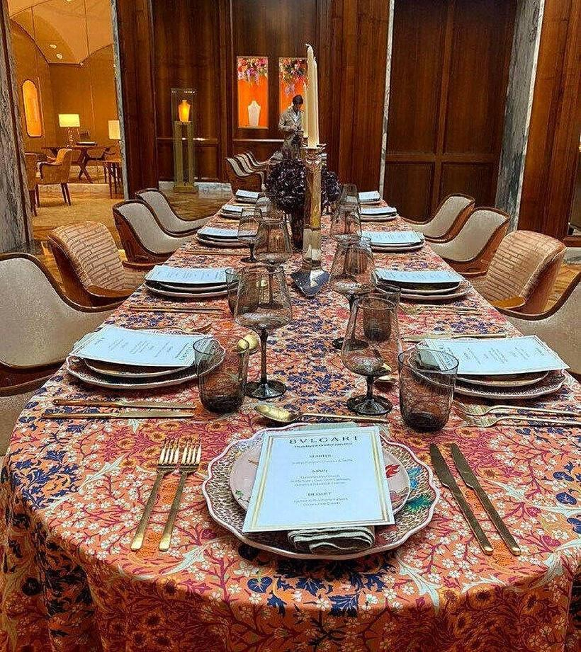

Private Chef Pricing
What shapes your quote
Every private chef quote is built around your specific event — there's no fixed rate card, because no two evenings are the same.

There's no single answer to “how much does a private chef cost”, because the honest answer depends entirely on what you're asking for. A quiet weeknight family dinner and a twelve-course tasting menu for a milestone celebration are simply different jobs, built from different ingredients, different preparation time and a different size of team — so rather than publish a generic rate card that would be misleading either way, every enquiry gets its own tailored proposal within 24 hours.
What to expect
01What actually shapes a quote
A handful of factors genuinely drive the cost of any private chef booking: the number of guests, the number of courses, how far in advance the booking is made, whether the event is a one-off or part of an ongoing arrangement, the specific ingredients involved (a menu built around wagyu, caviar or langoustine naturally costs more to source than one built around seasonal vegetables and good local produce), and how much additional staff — sous chefs, wait staff, a dedicated bartender — the event calls for. Travel outside London, for a weekend in the Cotswolds or a yacht charter on the Solent, is factored in separately and confirmed upfront.
02How the quote process works
An enquiry through the contact form, with a rough sense of your date, guest count and the kind of occasion it is, is all that's needed to start. From there, a short conversation covers any specific requests — dietary needs, a particular cuisine, whether you already have a menu in mind — and a full written proposal follows within 24 hours, covering exactly what's included so there are no surprises later.
03Why there's no fixed price list
A published rate card would have to either overstate the cost of a simple family dinner or understate the cost of a full staffed event, and neither does justice to what you're actually planning. A tailored quote, by contrast, reflects your specific evening — nothing more, nothing padded.
04Comparing a one-off dinner to an ongoing arrangement
A single evening booking and a recurring weekly or monthly arrangement are priced very differently, and not just because of the number of visits involved. An ongoing arrangement allows for more efficient shopping, a settled rhythm between client and chef, and menus that can be planned further ahead — all of which tends to make a regular arrangement more cost-effective per visit than booking the same number of one-off dinners separately. This is discussed as part of any enquiry that mentions an interest in a longer-term relationship rather than a single event.
05What's never included in the headline figure
A proposal is written to be complete, not to look attractive and then grow once a booking is confirmed. That means ingredient costs, staffing, standard equipment and clean-up are always built into the figure from the outset, with only genuinely variable extras — long-distance travel, a specific rare ingredient requested after the initial conversation, or a late change to guest numbers — handled as a separate, clearly flagged adjustment rather than a hidden add-on.
06How a proposal is presented
Once your enquiry is received, Alejandro Nicolau replies with a written proposal that sets out the menu, the team and what is included, so you can judge the whole booking at a glance before confirming. Changes to the guest count or the format can be discussed and reflected in an updated proposal.
Private Chef Pricing: FAQs
Why doesn't this page list actual prices?
Because a fair price depends on your specific event. Guest count, menu, duration and staffing all vary from one booking to the next, so Alejandro Nicolau gives a tailored quote within 24 hours of an enquiry instead of a fixed rate card.
Is there a deposit required to secure a booking?
Deposit requirements are confirmed in Alejandro Nicolau's written proposal, together with the full payment terms, so nothing is unclear before you commit to a date.
Does the price change if I need additional staff, like a bartender or extra wait staff?
Yes. Additional staff such as a bartender or extra wait staff are quoted in the same Alejandro Nicolau proposal, scaled to what your event requires.
Is travel outside London included in the quote?
Travel outside London, including weekend countryside properties, yacht charters and international events, is calculated separately and confirmed in Alejandro Nicolau's proposal.